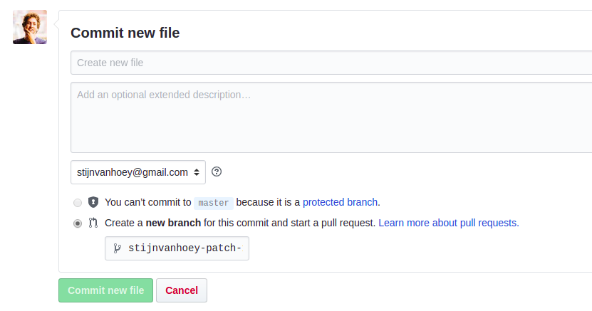

Create tutorial
Guidelines to create a new tutorial
Introduction
First of all, thanks to consider making a new tutorial! By providing a tutorial, you are actively supporting your colleagues and the wider community and making work more efficient.
In this page, the roadmap towards a new tutorial will be explained.
Writing a tutorial
Each tutorial is setup in a subfolder of the content/tutorials folder. Within this folder, different files and formats may exist as you create them, but a file with the name index.md will be used for the tutorials website. So, you can create the tutorial directly in markdown or create it based on a Rmarkdown, a Jupyter notebook or any other format, as long as there is a single markdown file with the name index.md in your tutorial folder.
There are different ways to create this file. We will provide in this document specific instructions for markdown an Rmarkdown based tutorials. Still, if you got useful information or text in another format or you got stuck with the description, do not hesitate to describe your submission in a new issue . If you do not have a Github account, ask the IT helpdesk. We will try to support you as soon as possible.
1. writing a markdown tutorial
If you are directly writing your documentation in markdown syntax, you can either work online using Github or work on your own computer while using git.
Online submission
Although providing less functionalities (adding custom images is not directly supported), the Github interface provides already a powerfull interface to add new content.
To write a new tutorial online, go to the INBO-tutorials Github repository and navigate to the /content/tutorials page, or use this link.
Next, click the Create new file button

You will be directed to a new page and asked to Name your file…

Providing this name is very important, so make sure:
- provide a folder name +
/+index.md - the folder name needs to be all lowercase
- the folder name should not have spaces, but you can use
_to separate words - provide a meaningful name without dates or names
For example: r_tidy_data/index.md, database_query_inboveg/index.md or statistics_regression/index.md
Notice: The moment you type the /, Github will guide you by translating this to a folder name.
Next, in the edit field you can start typing your tutorial. The header has an agreed format and you should copy paste this to start with:
---
title: "YOUR TITLE"
description: "SHORT DESCRIPTION ON TUTORIAL"
author: "YOUR NAME"
date: YYYY-MM-DD
categories: ["YOUR_CATEGORY"]
tags: ["FIRST_TAG", "SECOND_TAG", "..."]
---
# your text starts here...
Replace all the CAPITAL words with appropriate information:
- a short clear title
- a single or two line description
- your name
- the creation date, in the specified forma (
year-month-day), e.g. 2019-01-04 or 2018-04-02 - one or two categories from the specified list available here
- multiple tags you can pick yourself, all lowercase words. Have a look at the current wordcloud to check which would be useful for your submission.
Underneath the last triple dahs (---), you can write the tutorial as you like using markdown syntax. Use the Preview button to check how it would look like rendered on a website.
Notice: You can add images from online source by using the URL of the image, e.g. . For example, https://www.inbo.be/sites/all/themes/bootstrap_inbo/img/inbo/logo_nl.png will impor the INBO logo into your document:

If you are ready, commit your file to the website maintainers by filling in the boxes:

Create new file: exchange this by a short message about the additions, e.g. Add tutorial to explain tidy data in R or Add tutorial about database queries in inboveg,…Add an optional extended description: If you think more background info is suitable, add that in this box.yourgithubnam-patchyou can replace this by the same name as your folder name above (e..g.r_tidy_data) to clarify your submission.
(the checkbox will always be on create a new branch, this is also the required option)
Next, click commit new file and your submission will be reviewed by the website maintainers. If accepted, the tutorial will be automatically integrated in the tutorials website.
Using git (or Github Desktop, Rstudio,…)
When you ever used git or Github before, either using the command line, rstudio, Github Desktop,… you can work on your own computer and submit the tutorial using git. In this section, we assume you are familiar to the git command or interface and have some basic knowledge. If not, no worries, we have a dedicated course to get you up to speed, see the INBO git course.
Notice: The links in the different steps will refer to the Rstudio steps in the INBO git tutorial, but can be done using other interfaces or the command line as well. Pick the one you prefer
If it is your first submission using your computer, clone the INBO tutorials repository (so use the clone button on the https://github.com/inbo/tutorials page!).
Next, we use the git workflow to submit the new tutorial:
- Update your code and create a new branch, cfr. STEP 1 of the workflow. Provide a useful name for your branch related to the topic of your tutorial, e.g.
r_tidy_dataordatabase_query_inbovegand notmy_tutorial - Navigate to the subfolder
content/tutorialsand create a new subfolder in this directory. This will be the directory of your tutorial. Again, use a representative name for the directory name similar to the branch name. Within the folder, create a new file markdown
index.md. The header of this file has an agreed format and you should copy paste this to start with:--- title: "YOUR TITLE" description: "SHORT DESCRIPTION ON TUTORIAL" author: "YOUR NAME" date: YYYY-MM-DD categories: ["YOUR_CATEGORY"] tags: ["FIRST_TAG", "SECOND_TAG", "..."] --- # your text starts here...
Replace all the CAPITAL words with appropriate information:
- a short clear title
- a single or two line description
- your name
- the creation date, in the specified forma (
year-month-day), e.g. 2019-01-04 or 2018-04-02 - one or two categories from the specified list available here
- multiple tags you can pick yourself, all lowercase words. Have a look at the current wordcloud to check which would be useful for your submission.
Underneath the last triple dahs (---), you can write the tutorial as you like using markdown syntax.
add/committhe file to git, cfr. STEP 2 of the workflow. You can commit the tutorial all in once or split the commits in different steps, that is up to you. To make sure your work is updated online as well,pushthe tutorial as in STEP 3 of the workflow.- When ready,
pushyour tutorial a last time and create aPull requestto the website maintainers as explained in STEP 4 of the workflow.
After you pull request, your submission will be checked and reviewed. When accepted and merged, you tutorial will be online.
2. Writing an Rmarkdown tutorial
As you are writing the tutorial in Rmarkdown, we assume you are using Rstudio to write the tutorial. In this section, we assume you are familiar to the Rstudio git interface and have some basic knowledge. If not, no worries, we have a dedicated course to get you up to speed with git in Rstudio, see the INBO git course.
If it is your first submission using your computer, clone the INBO tutorials repository (so use the clone button on the https://github.com/inbo/tutorials page!).
Next, we use the git workflow to submit the new tutorial:
- Update your code and create a new branch, cfr. STEP 1 of the workflow. Provide a useful name for your branch related to the topic of your tutorial, e.g.
r_tidy_dataordatabase_query_inbovegand notmy_tutorial - Navigate to the subfolder
content/tutorialsand create a new subfolder in this directory. This will be the directory of your tutorial. Again, use a representative name for the directory name similar to the branch name. Within the folder, create a new file markdown
index.Rmd. The header of this file has an agreed format and you should copy paste this to start with:--- title: "YOUR TITLE" description: "SHORT DESCRIPTION ON TUTORIAL" author: "YOUR NAME" date: YYYY-MM-DD categories: ["YOUR_CATEGORY"] tags: ["FIRST_TAG", "SECOND_TAG", "..."] output: md_document: preserve_yaml: true --- # your text starts here...
Replace all the CAPITAL words with appropriate information:
- a short clear title
- a single or two line description
- your name
- the creation date, in the specified forma (
year-month-day), e.g. 2019-01-04 or 2018-04-02 - one or two categories from the specified list available here
- multiple tags you can pick yourself, all lowercase words. Have a look at the current wordcloud to check which would be useful for your submission.
- leave the
outputsection as it is
Underneath the last triple dahs (---), you can write the tutorial as you like using markdown syntax and add code chunks to run R code.
As the Rmarkown file will not be part of the website, make sure to click the knit button to create the equivalent markdown file (index.md) in the same directory:

Notice: always knit the Rmarkdown file before you start committing the changes!
add/commitboth files to git, cfr. STEP 2 of the workflow. You can commit the tutorial all in once or split the commits in different steps, that is up to you. To make sure your work is updated online as well,pushthe tutorial as in STEP 3 of the workflow.- When ready,
pushyour tutorial a last time and create aPull requestto the website maintainers as explained in STEP 4 of the workflow.
After you pull request, your submission will be checked and reviewed. When accepted and merged, you tutorial will be online.